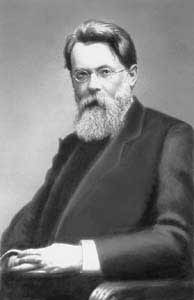

Материалы Гумилевских чтений
2-е Гумилевские чтения, Москва, 1998
3-е Гумилевские чтения, Москва, 1999
4-е Гумилевские чтения, Москва, 2000
Материалы для студентов
Размещенные ниже ссылки помогут Вам в изучении основ пассионарной теории этногенеза и теории межэтнических контактов.
В гостях у Льва Гумилёва. Беседуют Лев Гумилёв, Григорий БОНДАРЕНКО, Вячеслав ЕРМОЛАЕВ и Константин ИВАНОВ (11/11/01)
Опубликовано в газете "День" ╧ 29 (50), 22-28 марта, 1992 г.Выступление Президента Российской Федерации В.В.Путина в Университете имени Л.Гумилева, г. Астана, 10 октября 2000 г. (12/01/01)
Опубликовано на Официальном сервере Президента Российской Федерации.- Константин Иванов. Механизм
этногенеза как инструмент исследования
этнокультуры
Опубликовано // Сборник ДНИ Л.Н.ГУМИЛЁВА В БЕЖЕЦКЕ (По материалам научно-познавательной конференции, прошедшей в Бежецке 29-30 октября 1994 г.) - Экопрос, 1995. - Константин Иванов и Лев Гумилёв. Диаграмма Классификация людей по пассионарно-аттрактивному принципу.
- Не является ли Александр Гельевич Дугин, лидер движения движение "Евразия" представителем антисистемы? По материалам справочника Миссионерского отдела Московского Патриархата Русской Православной Церкви. (3/02/03)
- Вячеслав Ермолаев. Предисловие к
очерку Л.Н. Гумилева "Из истории Евразии"
Опубликовано // Л.Н. Гумилев. Из истории Евразии. М., Изд-во Искусство, 1993. - Владимир Мичурин. Возрождение
Ирана: в свете теории этногенеза
Опубликовано // Наш Современник, No 8, 1992, с. 124-128. - Ю. К. Ефремов. Слово
о Льве Николаевиче Гумилёве
(30/09/05)
Опубликовано ╚Известиях Русского географического общества╩ (1994, ╧ 1).
материалы о Ю. К. Ефремове (1913-1999), соратнике Л. Н. Гумилёва (31/10/05) - А. И. Лукьянов. Пассионарий отечественной науки и культуры (3/03/06)
- Савва Ямщиков (1938≈2009). Счастье общения (23/06/06)
- Л. Д. Стеклянникова. Вечная
память (8/09/07)
Опубликовано // Лев Гумилев: Судьба и идеи. √ М.Айрис-Пресс, 2003. - А.Г. Каримуллина (1925≈2000). Лев Николаевич
Гумилев. Библиографический указатель.
Опубликовано // Республиканская научная библиотека им. В.И. Ленина Татарской ССР, Казань, 1990.
Работы друзей и учеников Л.Н. Гумилева на Интернете
Работы Дмитрия Михайловича Балашова (1927-2000)
Научные труды Сергея Борисовича Лаврова (1928-2000)
Работы Александра Михайловича Панченко (1937-2002)
Научные труды Константина Павловича Иванова (1953-1992)
Труды Ольги Геннадьевны Новиковой
Научные труды Вячеслава Юрьевича Ермолаева
Научные труды Владимира Аскольдовича Мичурина (1965≈2006)
Научные работы Игоря Сергеевича Шишкина
Научные работы Павла Михайлович Корявцев-Игнатьев
Работы опирающиеся на учение Л.Н. Гумилёва
Размещенные ниже ссылки дают Вам некоторое представление об этногенезе как в теории, так и на практике. Конечно, эти представления не всегда соответствуют положениям теории. Практически все статьи имеют архивы в формате ZIP.
- К. Бутусов, канд. ф-м. наук, В. Мичурин "Лев Гумилев: Космос и
Человечество" (К гипотезе космического
происхождения пассионарных толчков). Опубликовано
// Международный научно-художественный журнал
пограничных знаний "Терминатор", No 4/5, 1995, с.
8-9.
Материалы любезно предоставлены Общественной организацией "Фонд Л. Н. Гумилева". - К определению понятия
"комплиментарность". Сост. О.Г. Новикова,
канд. техн. наук. Впервые опубликовано на нашем
сайте.
Материалы любезно предоставлены Общественной организацией "Фонд Л. Н. Гумилева". - Кирилл Маклаков. Теория этногенеза с точки
зрения биолога (Литературно- художественный и
публицистический журнал "УРАЛ" ╧ 10 за 1996
год) копия здесь
 .
.
 http://agama.garnet.ru/r_club/journals/ural/ur10/maklakov.html
http://agama.garnet.ru/r_club/journals/ural/ur10/maklakov.html - Юрий Вахтин "Мутации
пассионарности Л.Н.Гумилева: возникновение и
фенотипическое проявление". // Впервые
опубликована на сайте Gumilevica
Материалы любезно предоставлены Общественной организацией "Фонд Л. Н. Гумилева". - Василий Никифорович Абросов. Гетерохронность периодов повышенного увлажнения гумидной и аридной зон
- Владимир Махнач. Историко-культурное
введение в политологию на кафедре "Русского
Университета". В. Л. Махнач один из московских
последователей теории Л. Н. Гумилёва, считающий
себя его учеником.
http://www.russ.ru/univer/chairs/makhnach/001/index.html
- Владимир Махнач. Статьи в Антологии "Русского журнала":
- Владимир Баранов. Статьи в Интернет-журнале "НЕПОГОДА"
- Андрей Орехов. Глобальное
закабаление (31/07/03)
[Статья любезно предоставлена Общественной организацией "Фонд Л. Н. Гумилева".]- Опубликовано // Санкт-Петербургские ведомости, ╧ 53 (2443) 24 марта 2001 г.
- Дауд Аминов. Беседа о
Золотой Орде
(26/02/02)
[Беседа любезно предоставлена Общественной организацией "Фонд Л. Н. Гумилева".]- Одна из последних бесед Льва
Николаевича с журналистами.
Опубликовано в санкт-петербургской газете "Нур", ╧ 6 июнь 1995 года.
- Одна из последних бесед Льва
Николаевича с журналистами.
- Проф. А.К.Гуц. Моделирование этнических и
социальных процессов (Омский государственный
университет). Часто проводятся реконструкции.
http://www.univer.omsk.su/MEP
Книги и статьи учеников и последователей Л.Н. Гумилёва
1. Ю. М. Бородай. В поисках этногенного фактора // Природа, 1981, ╧ 4. (30/11/04)2. Эколого-географические исследования системы этноландшафта: Прикладной аспект// Географические исследования для целей планирования, проектирования, разработки и реализации комплексных программ : Тезисы докладов секции VIII Географического общества СССР: (Киев, октябрь 1983 г.) - Ленинград, 1985 г. - С. 147 - 149. - Соавторы Л.Н.Гумилева, В.Ю.Ермолаев, В.А. Маслов.
3. Ермолаев В.Ю. Самоорганизация в природе и этногенез// Изв. Всесоюзн.географ. о-ва. - 1990. - Т. 122, вып.1 - С.26-32.
4. Ермолаев В. Ю. Этногенез и социальная география городов России. Автореферат дис. на соискание уч.степени кандидата географических наук. 11.00.02 / ЛГУ. Л., 1990, 13 с. (31/05/05)
5. Этносфера и космос // Космическая антропоэкология: Техника и методы исследования : Материалы 2 Всесоюзного Совещеная по космической антропоэкологии. - М., 1988,- С.211-222. - Соавтор Л.Гумилева - Иванов К.П.
6. "Славянские ли ручьи сольются в русском море" - в гостях у Литературно-публитистического клуба "Глагол" Л.Н. Гумилев, А.М. Панченко, К.П. Иванов - Литературная учеба, 1990,- Книга 6 (ноябрь, декабрь). (15/10/04)
7. Балашов Д.М. Анатомия антисистемы // Наш современник, 1991, No 4.
8. Иванов К.П. Механизм этногенеза - инструмент исследования этнокультуры, - в сб. : Проблемы изучения и охраны памятников культуры Казахстана. Алма-Ата, 1980, С.72-84.
9. Ермолаев В.Ю. "Черная Легенда": имя идеи и символ судьбы // предисл. к книге Л.Н.Гумилева Черная легенда : Друзья и недруги Великой степи. М.: Экопрос, 1994.-624 с.
10. Иванов К.П. Проблемы этнической географии. СПб.: Изд-во С.-Петерб. ун-та, 1998.
Материалы о С. Б. Лаврове (1928≈2000), Президенте Русского географического общества и заместителе Президента Фонда Л.Н. Гумилева
- А. Орехов. "Евразийский геополитик (записки о Сергее Лаврове)" (24/09/01)
- Н. Ф. Дмитриевская. Рецензия на книгу С. Б. Лаврова "Лев Гумилев. Судьба и идеи" (5/06/03)
- А.А. Анохин. Большой ученый, истинный универсант, добрый, обаятельный человек - таким мы запомнили Сергея Борисовича Лаврова (30/06/03)
- А.О. Бринкен, Ю.П. Селиверстов. Сергей Борисович Лавров и Русское географическое общество (30/06/03)
- Ю. П. Михайлов. Возвращение геополитики и ее некоторые новые аспекты (25/09/03)
- С. Б. Лавров как эконом-географ (80 лет со дня рождения ученого) (26/05/08)
Пресса и другая информация о сайте "Gumilevica"
- Галия Теляшева. Гумилёв продолжается на "Интернете" // Газета "Татарские края" No 12 за 1999 год.
- Создатели сайта. Gumilevica ≈ пять лет в Интернете. Информационное сообщение.(30/03/03)
Материалы предтеч евразийства
Здесь помещены ссылки, которые содержат материалы исследователей, которые разрабатывали "евразийскую" парадигму как широкий подход исследования цивилизаций:
- О Михаиле Петровиче Розберге (1804≈1874), первом предшественнике евразийства в России, заметка Редколлегии за 2007 ╧ 5 [107] (16/04/07)
- Реакции в Российской империи на лекцию М. П. Розберга ╚Об историческом значении России╩ с самым первым изложением евразийства, заметка Редколлегии за 2008 ╧ 8 [124] (3/07/08)
- М. П. Розберг. Об историческом значении России (1837), авторизованный перевод лекции с французского языка (10/06/08)
- О Николае Яковлевиче Данилевском (1822≈1885), идеологе панславизма, предшественнике евразийства в России, заметка Редколлегии за 2000 ╧ 7 [22] (16/04/07)
- Н. Я. Данилевский "Россия и Европа" (1869) (7/07/00)
- О Константине Николаевиче Леонтьеве (1831≈1891), учителе евразийства Л. Н. Гумилёва, заметка Редколлегии за 2004 ╧ 1 [67] (25/01/04)
- ╚Об отношении Л.Н.Гумилёва к К.Н. Леонтьеву (1831≈1891)╩, заметка Редколлегии за 2005 ╧ 4 [82] (30/04/05)
- Труды К. Н. Леонтьева (6/02/04)
Материалы о теории систем, учении В. И. Вернадского о биогеохимической энергии и синергетике
| 
Фото 1910-х гг. |
Вернадский Владимир Иванович
(8
февраля 1863, Петербург, - 6 января 1945,
Москва), химик, минералог и кристаллограф,
академик АН СССР (1912), академик (1919) и
первый президент (1919-21) АН УССР. Родился в
Петербурге. Окончил Петербургский
университет (1885), в 1886-88 хранитель его
Минералогического музея. Участник
студенческих кружков. Приват-доцент (1890)
и профессор (1898-1911) Московского
университета. Вернадский - один из
создателей (1905) и членов ЦК партии
кадетов (после 1917 отошёл от политической
деятельности). С 1914 директор
Геологического и минералогического
музея. Основатель и первый председатель
Комиссии по изучению естественных
производительных сил России (1915-30).
Организатор и директор Радиевого
института (1922-39). Основоположник
геохимии, генетической минералогии,
биогеохимии; Вернадский - автор
фундаментальных работ по философским
вопросам естествознания; создал учение
о биосфере и её эволюции, о воздействии
деятельности человека на окружающую
среду, выдвинул идею преобразования
современной биосферы в ноосферу (сферу
разума). Государственная премия СССР
(1943). В АН СССР учреждены премия (с 1945) и
Золотая медаль (с 1963) имени Вернадского .
Идеи В. И. Вернадского легли в основу не только теории Л. Н. Гумилёва, но и активно развивающейся науки о самоорганизации открытых систем - синергетики. Л. Н. Гумилёв. "Авторский замысел и сила открытия" (6/10/05) |
- Александр Иванов-Ростовцев, Леонид Колотило. "...Все мы причастны со Вселенной" // газета "Ленинградский Университет" 29 октября 2001 г. - ╧ 31 (3294) . (10/10/01)
- В.И. Вернадский. "О науке". Том I. Научное
знание. Научное творчество. Научная мысль //
Собрание сочинений, изданное при поддержке РФФИ.
http://intra.rfbr.ru/pub/knigi/vernadsky/obl.htm - А.А. Малиновский "Значение
общей теории систем в биологических науках"
Опубликовано // ежегодник Системные исследования. - М.: 1984. (30/11/01) - "Из чего состоит синергетика", материалы на
странице В. И. Короткова, посвященной развитию
концепции ноосферы В.И.
Вернадского на основе парадигмы синергетики.
http://www.nic.nw.ru/noo/Korotkov/content.html - Теория Л. Н. Гумилёва. Что это? Паранаука, смелая гипотеза или научная теория в стадии становления (материалы дискуссии 6-12 июля 1998 года на "Вечернем Интернете").
- Страница Владислав Тарасенко (Институт
философии РАН, Москва) методологии осмысления и
моделирования сложных и хаотических процессов,
связанные с синергетикой, теорией катастроф,
теорией хаоса, фрактальной концепцией.
http://www.iph.ras.ru/~vtar/ - Главы из книги С.П. Капицы, С.П. Курдюмова и Г.Г.
Малинецкого "Синергетика и прогнозы
будущего" которую размещена на странице
Московского синергегетического форума.
http://www.iph.ras.ru/~mifs/kkm/Gl2.htm
Састейнабильность (Sustainability)
- Описание Састейнабильности по Алексею Войнову
http://iee.umces.edu/AV/PUBS/PARADOX/Sust_koi8.html - Алексей Войнов. Парадоксы Састейнабильности (на
англ. языке), где прослеживается некоторые
аналогии между пассионарной теории этногенеза с
современными западными теориями по экологии
и социальной экономике.
http://iee.umces.edu/AV/PUBS/PARADOX/Sust_Par.html - Алексей Войнов. Управление ресурсов. Может ли
стабилизироваться Северо-западная
тихоокеанская рыболовные и океанические системы
США (на англ. языке), где анализуется устойчивое
развитие и экологическое здоровье экосистем на
примере пассионарной теории этногенеза.
http://iee.umces.edu/AV/PUBS/BEIJ/Beijer.html - Подборка статей в журнале "Гуманитарные
науки в Сибири" СО РАН (No 1 за 1997 год) по проблеме
устойчивого развития человечества.
http://www.philosophy.nsc.ru/life/journals/humscience/1_97/sod.htm - Илья Пригожин. "Философия нестабильности"
в журнале "Вопросы философии" No 6 за 1991 г. (46-57
стр.).
http://www.accessnet.ru/vivovoco//VV/PAPERS/NATURE/NONSTAB.HTM